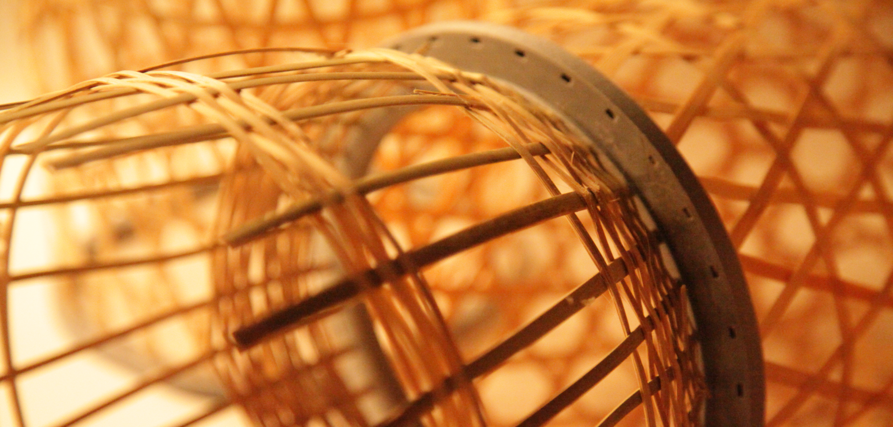
Bam³ Creel
Staff / 参与者
LiangHou, YidiShao, KeyiWu
Date / 时间
June 2023 / 2023 年 6 月
Bam³ Creel is a collection that reimagines traditional marine fishing traps, including crab traps, drum traps, squid traps, and fish traps. By combining 3D printing with traditional bamboo weaving, the collection introduces a modular structure that makes damaged components easier to replace and repair. Interlocking structures are also used to simplify complex weaving techniques, such as starting the base and closing the opening, lowering the skill barrier to making bamboo fishing tools. Bam³ Creel explores how digital fabrication can reconnect traditional craftsmanship with contemporary life, allowing traditional fishing tools to continue in new forms.
Bam³ Creel 是一系列面向传统海洋捕捞笼壶的创新设计，包括蟹笼、鼓笼、乌贼笼和鱼罩四类器具。我们将 3D 打印技术与传统竹编工艺相结合，通过模块化结构改善传统笼壶破损后难以修补的问题，使受损部件能够更加便捷地替换与维护。同时，我们以简单的穿插结构替代竹编中起底、收口等高难度编织技法，降低传统竹编器具的制作门槛。Bam³ Creel 希望以数字制造重新连接传统手工艺与现代生活，让逐渐淡出日常使用的传统捕捞器具以新的形态延续。
Project Video / 项目视频
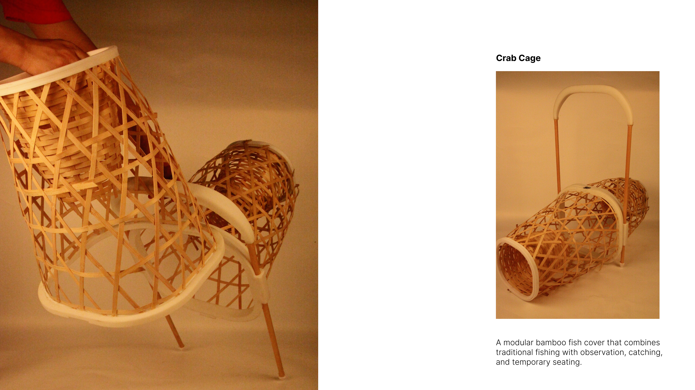
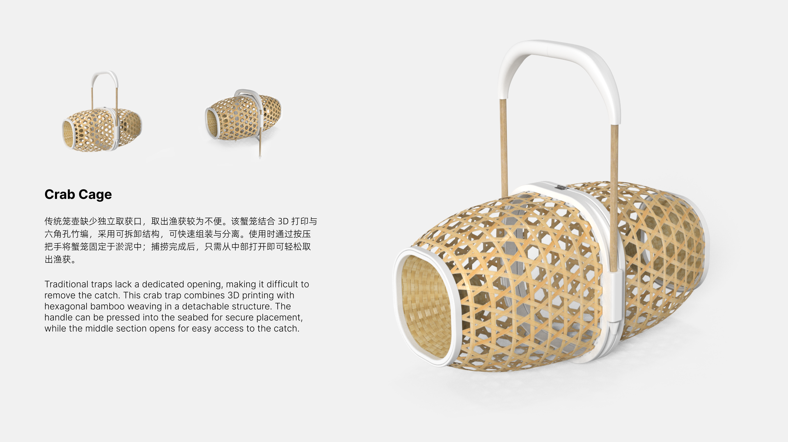
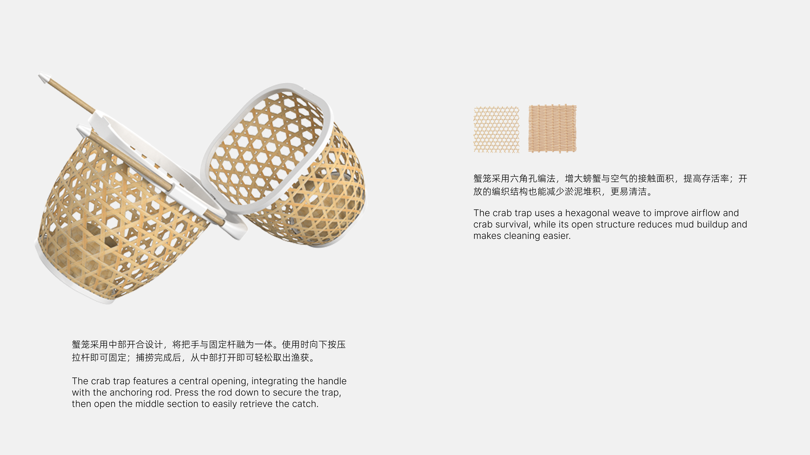
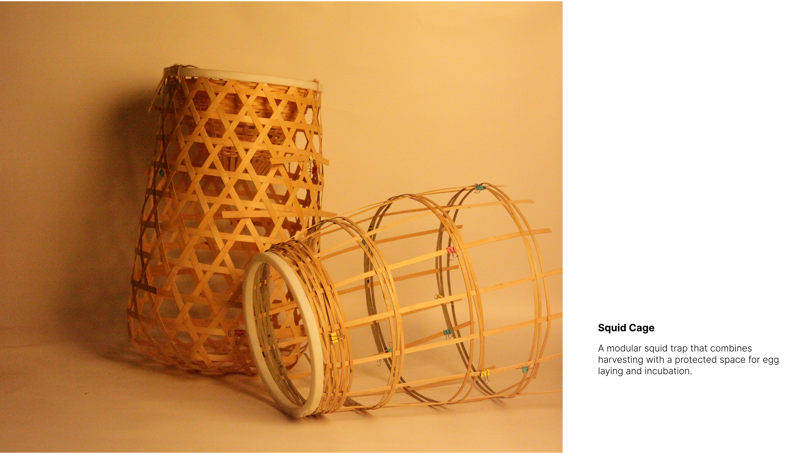
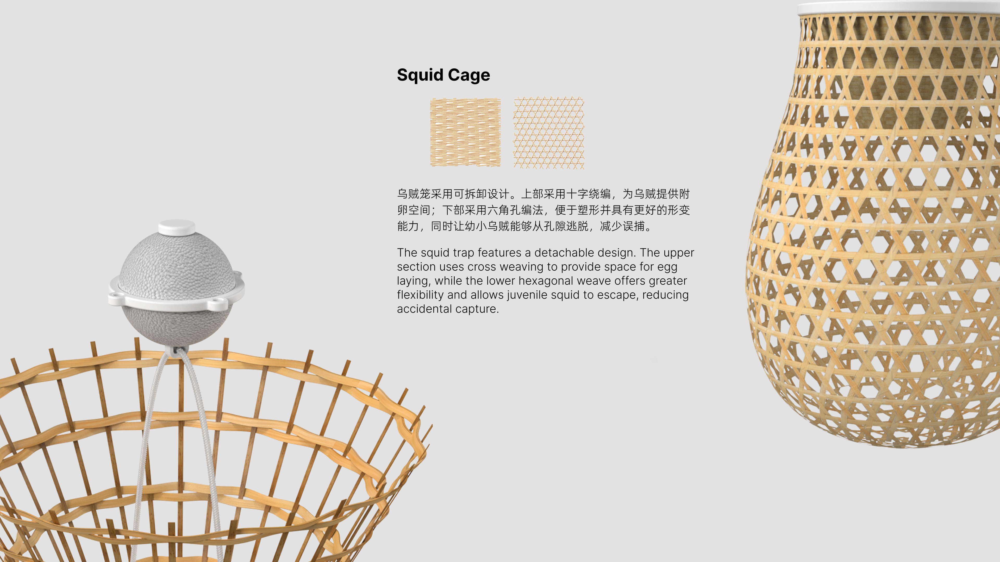
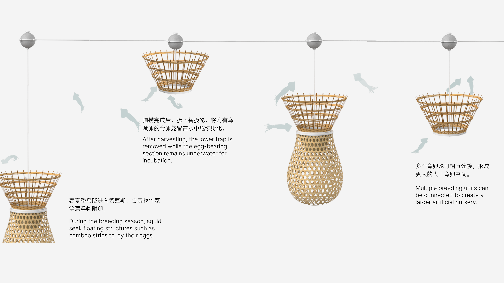
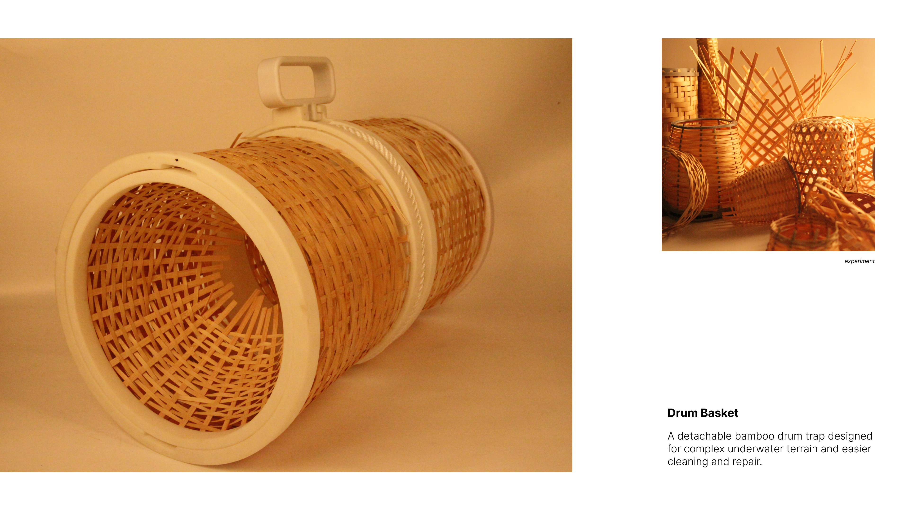
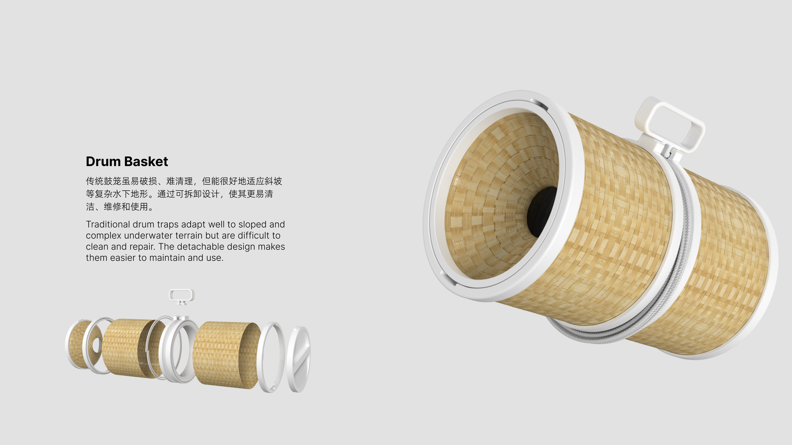
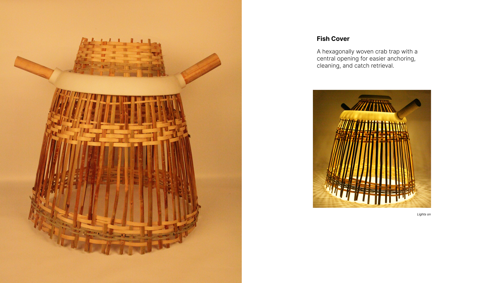
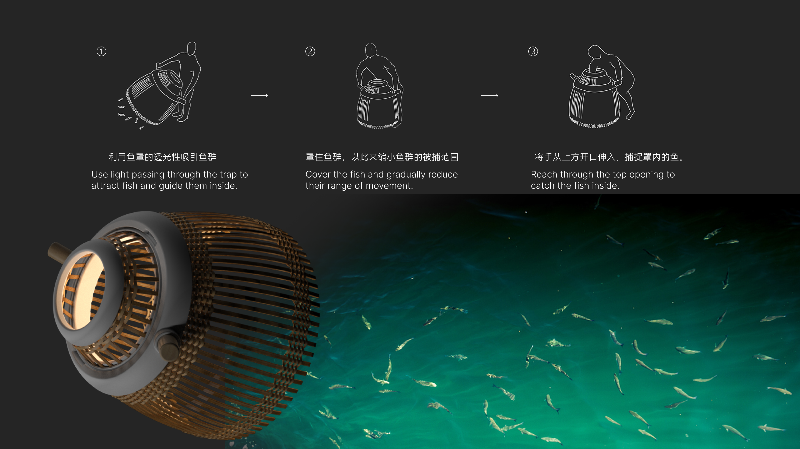
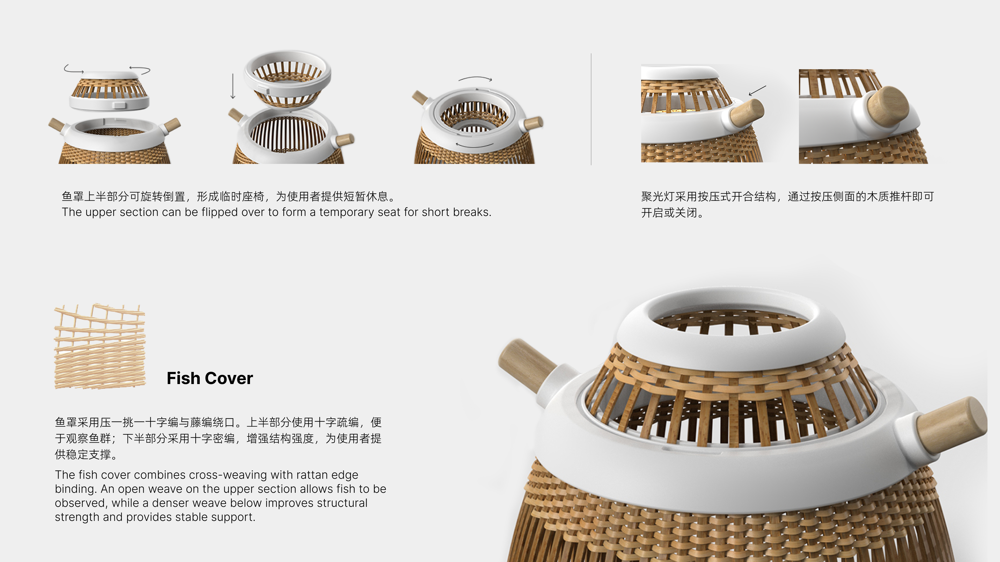